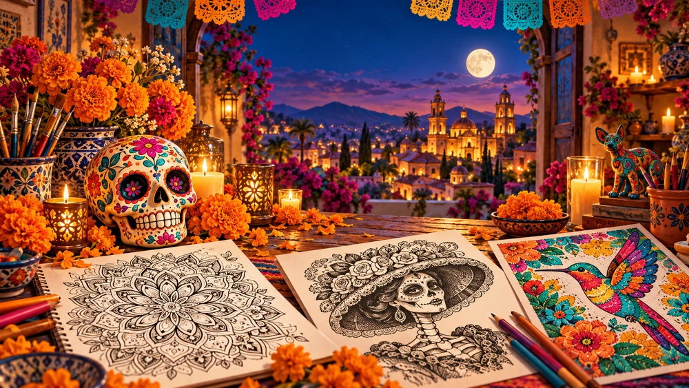

Menos carga. Más calma.
Las galerías de puzzles cargan las imágenes a medida que aparecen en pantalla: usan menos memoria y ayudan a evitar recargas inesperadas en iPhone y iPad.
Entre las luces de Navidad y los nuevos comienzos, haz un pequeño espacio para ti. Colorea, arma un puzzle y encuentra tu propia forma de desconectar.
Gratis para descargar · Para iPhone y iPad
R-Zen 3.0 presentó Noches de luz y memoria. La versión 3.0.1 hace que explorar tus galerías de puzzles sea más ligero y estable.
Conoce las colecciones ↓Las galerías de puzzles cargan las imágenes a medida que aparecen en pantalla: usan menos memoria y ayudan a evitar recargas inesperadas en iPhone y iPad.
Descubre Noches Noir y las obras inspiradas en Día de Muertos: mandalas, ilustraciones acogedoras, Color mágico, pintura por número y creaciones animadas.
Termina un lienzo de Color mágico y consérvalo como carta coleccionable en tu diario. Un pequeño recuerdo del tiempo que te has dedicado.
Explora los carruseles de temporada renovados, con ajustes para iPhone y iPad. Otoño o primavera siguen tu preferencia de hemisferio.
Las colecciones que llegaron con R-Zen 3.0 te acompañan más allá de la temporada.

Rincones acogedores, calles a la luz de la luna y un poco de misterio. Explora 68 obras entre colorear, Color mágico, pintura por número y Cobra vida.

Una celebración afectuosa del recuerdo entre cempasúchiles, detalles tradicionales y escenas acogedoras. Descubre 36 diseños en cuatro categorías creativas.
Descarga opcional de packs · Incluidos con Premium de pago único · Crea sin conexión después de descargarlos
Un pincel, una pieza, un momento de calma. Hay muchas formas de sentirte en tu espacio.

Deja que el color encuentre su ritmo. Pinta los detalles a tu manera.

Viaja por lugares hermosos, pieza a pieza. Sin reloj. Sin prisa.
Escenas acogedoras y pequeños detalles, listos para tu propia paleta.

Sigue los números y descubre cómo toma forma una imagen.
Pasa el pincel por el lienzo y revela un mundo a todo color.
Termina ciertas obras de pintura por número y verás cómo empiezan a moverse.
Escribe en tu diario, vuelve a tus creaciones terminadas y colecciona las cartas de tus lienzos de Color mágico. Añade música ambiental original y deja que el día baje el ritmo.
Explora algunas vistas de R-Zen en iPhone y iPad. Toca una imagen para verla más de cerca.
Una mañana tranquila de Navidad. Una pausa entre celebraciones. La primera página de un nuevo año. No hace falta un momento perfecto para empezar, solo uno que sea tuyo.
Un color, un puzzle, unas líneas en el diario. Empieza por lo que te apetezca.
Elige tu música y tómate tu tiempo. No tienes que seguir el ritmo de nadie.
Conserva tu creación, vuelve mañana o empieza algo nuevo.
Empieza con una selección gratuita en los principales modos creativos. Desbloquea más con Premium opcional de pago único. Sin suscripciones.
Descárgala en la App StoreiPhone y iPad · 8 idiomas en la app · Sin anuncios ni cuentas

Un capítulo anterior que sigue formando parte del mundo de temporada de R-Zen. Noche encantada es opcional y nunca se activa automáticamente.
R-Zen es gratis para descargar e incluye una selección de contenido en los modos principales. Premium es una compra opcional de pago único, sin suscripción. El precio se muestra en la App Store y dentro de la app.
El contenido creativo incluido funciona sin internet. Los packs opcionales necesitan conexión para descargarse; una vez guardados en tu dispositivo, también funcionan sin conexión. Las compras y los enlaces externos necesitan internet.
Esta actualización mejora la estabilidad y el uso de memoria en las galerías de puzzles. Las nuevas colecciones y las cartas del diario llegaron con la versión 3.0.
Esta página tiene un diseño especial de Navidad y Año Nuevo. Las colecciones destacadas son Noches Noir y Día de Muertos, que llegaron con R-Zen 3.0. La ilustración navideña es arte para la web.
Español, inglés, portugués, francés, italiano, japonés, alemán y vietnamita. Esta web está disponible en inglés y español.